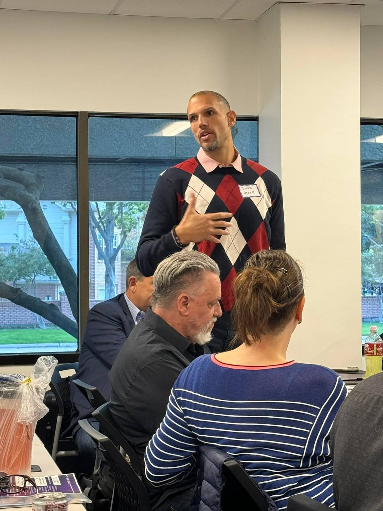
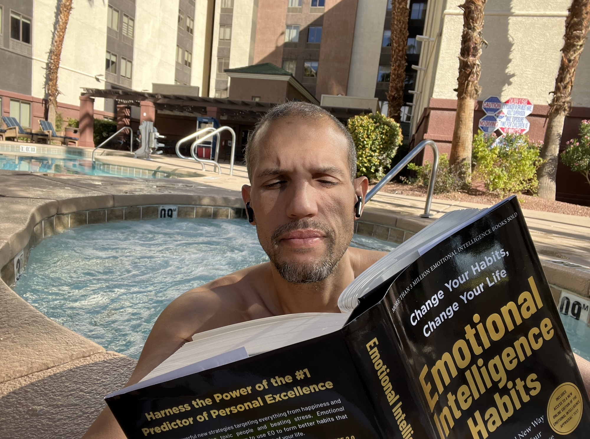
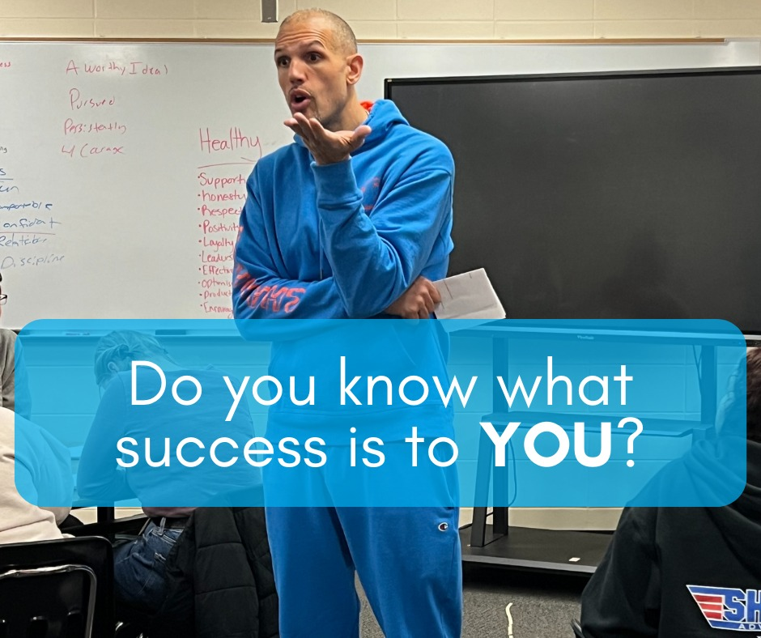
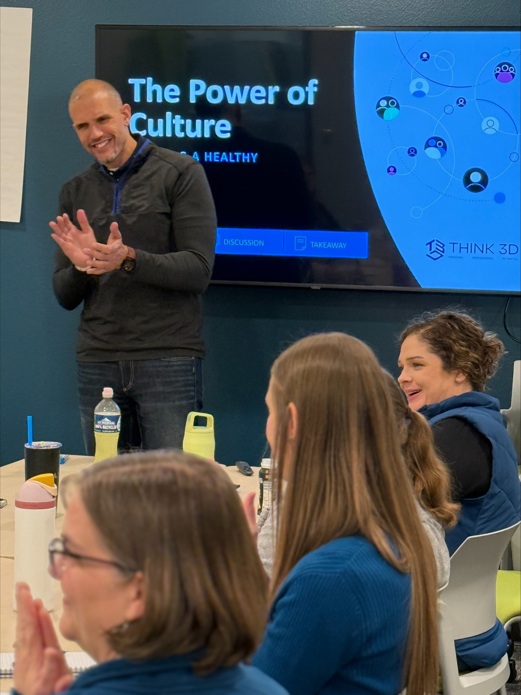
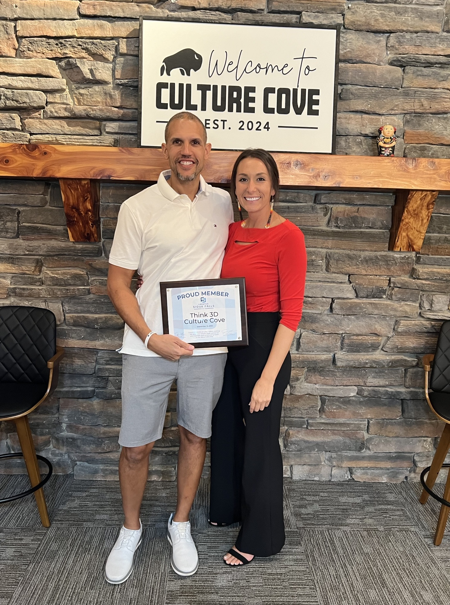
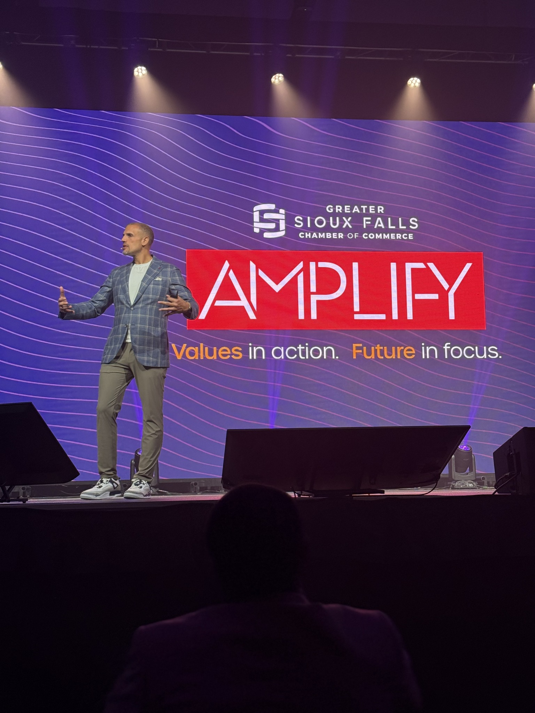
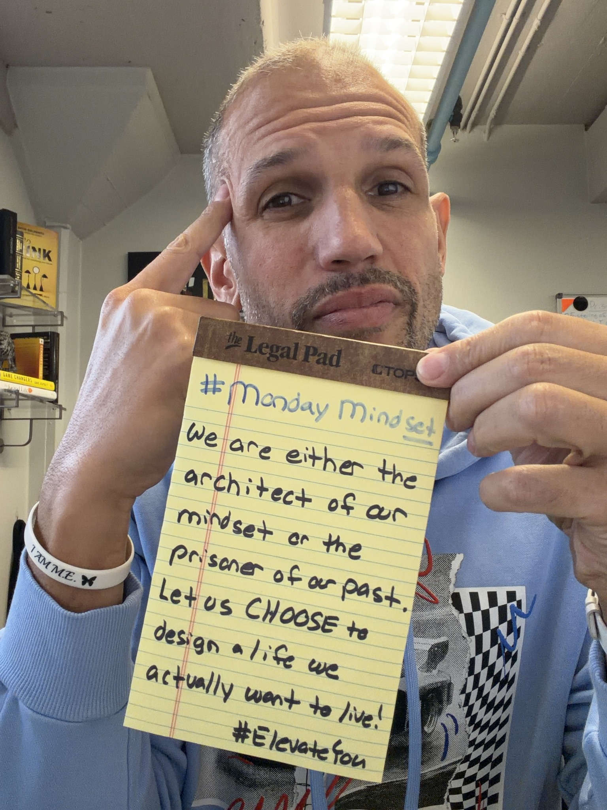
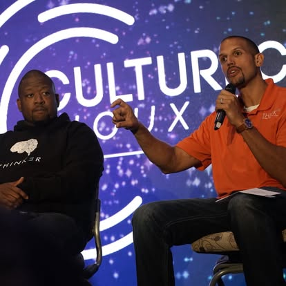
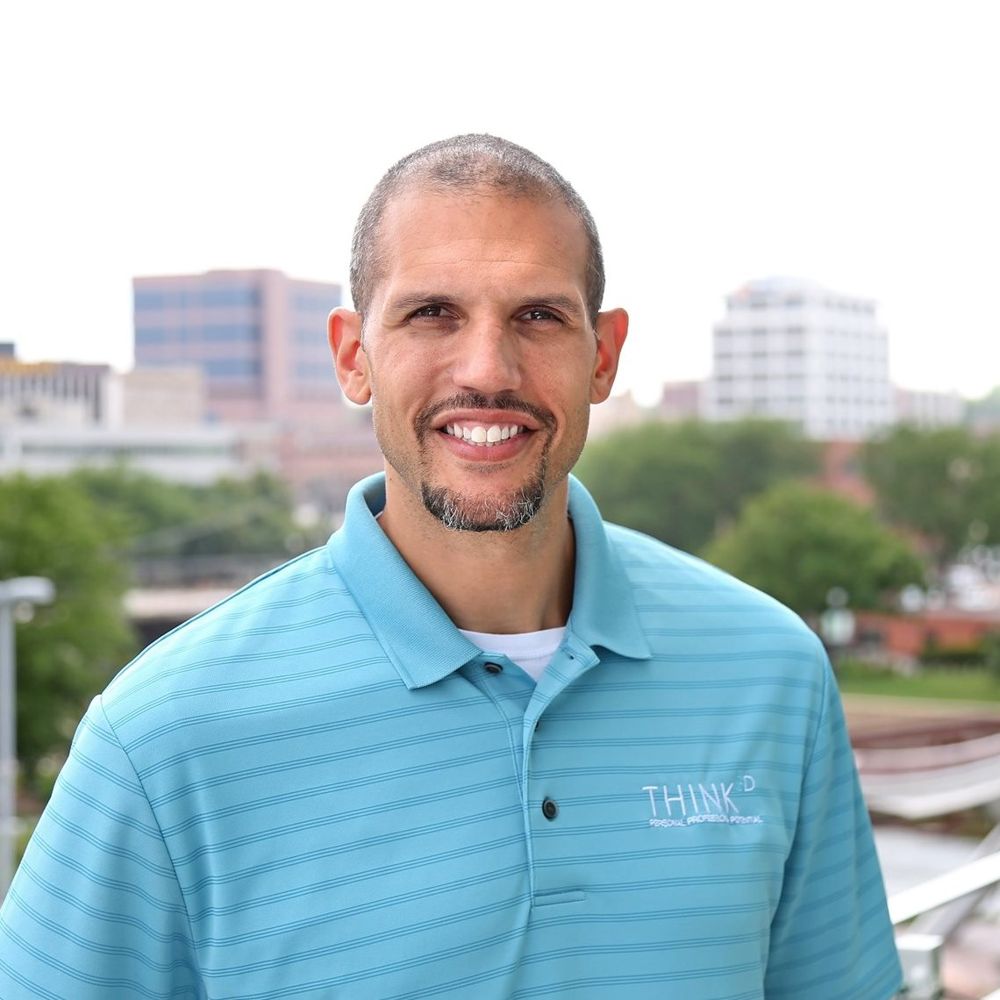

Referrals got him here
Word of mouth is powerful, but it does not compound unless the digital presence confirms the referral.
Private strategic workspace.
Tamien already has the story, substance, frameworks, and proof. The work now is making the personal brand visible enough that buyers, event organizers, and leaders can understand it fast.
Word of mouth is powerful, but it does not compound unless the digital presence confirms the referral.
The issue is discovery, distribution, and proof packaging — not lack of credibility.
Tamien should be the visible authority. Think 3D, Elevate You, and Culture Cove become connected spokes.
The aligned audit says it plainly: “You have the story. Almost nobody knows it.” Tamien has a rare combination: lived story, Fortune 500 credibility, keynote presence, a book, proprietary frameworks, measurable culture outcomes, and a growing ecosystem. But much of that authority is hidden behind company pages, inconsistent social execution, and underused proof.
Referrals got Tamien here. A compounding personal brand is what gets him to the next level.
Before a CPO, HR director, executive team, or event organizer says yes, they will search Tamien. The portal and the personal brand need to answer three questions in seconds: who is he, why should we trust him, and what should we do next?
The highest-leverage move is not “post more.” It is to build the authority infrastructure: personal website, LinkedIn rewrite, review collection, proof assets, content system, and quarterly optimization. Once the foundation is clear, content starts to compound instead of disappearing.
The brand has high intellectual authority and a strong story, but the public-facing surface is fragmented. This is a discovery and conversion problem.

Frameworks, story, proof, book, and client outcomes are already present.
Search, social, reviews, and personal website do not yet match the depth of the work.
The priority is clearer architecture plus visible proof, not more disconnected publishing.
Tamien has real assets most personal brands pretend to have: a compelling origin story, corporate credibility, public speaking experience, a book, repeatable frameworks, Think 3D University, Leaders of Tomorrow, and a transformation ecosystem that spans individual, organizational, and community work.
| Asset | Why it matters |
|---|---|
| Fortune 500 + culture experience | Gives corporate buyers trust that the work can operate inside real organizations. |
| Capital One turnover result | A specific measurable proof point that can anchor the brand. |
| Elevate book + frameworks | Shows methodology, not just motivational speaking. |
| 1,000+ graduates | Signals scale, community, and demand — but needs proof capture. |
The aligned audit identifies the real issue: the brand is not under-created; it is under-packaged. The content exists, but the path from attention to trust to inquiry is unclear.
| Platform | Current signal | Strategic implication |
|---|---|---|
| LinkedIn personal | 3,053 followers; active but underoptimized. | Best immediate B2B authority platform. |
| Instagram personal | 545 followers from 311 posts. | Needs bio, captions, hashtags, carousels, CTAs, and engagement ritual. |
| Think 3D Instagram | 2,015 followers from 1,703 posts. | Should cross-tag and feed Tamien’s personal authority. |
| YouTube Think 3D | 559 subscribers, 1,064 videos, 176K views. | Hidden asset; needs title, CTA, Shorts, and replication strategy. |
Tamien is not just a coach or speaker. The strongest positioning is a keynote-ready transformation leader with a corporate-grade personal brand and a human story.

He shows the blueprint and builds it with people.
You leave with a system, not just a spark.
Organizational leaders, emerging leaders, and nonprofit/community audiences need distinct doors.
Primary positioning: keynote, motivational, and leadership speaker for organizations that want better culture and leaders who want better lives. The differentiator is the blend of human story, Fortune 500 experience, behavioral science, and practical frameworks.
Tamien Dysart is the architect who shows people the blueprint and then builds it with them. His work sits at the intersection of neuroscience, lived experience, leadership development, and systems thinking. He helps people stop reacting and start designing their life, team, culture, and legacy.
Tamien should be the hub. Think 3D, Elevate You, Culture Cove, and community work become the spokes.

Named authority and source of the transformation philosophy.
Organizational culture and leadership system.
Individual growth, retreats, book, and community pathway.
The ecosystem becomes easier to understand when Tamien is positioned as the visible source of the philosophy. Think 3D serves organizations. Elevate You serves individuals. Culture Cove becomes an experience/community layer. Young Kings and community initiatives extend the legacy layer.
| Brand layer | Role | Audience |
|---|---|---|
| Tamien Dysart | Personal authority, speaker, author, thought leader | Buyers, event organizers, leaders, community |
| Think 3D Solutions | Culture and leadership implementation | Organizations and teams |
| Elevate You | Personal transformation and intentional living | Individuals and alumni |
| Culture Cove | Retreat and community experience | Transformation community |
When everything sits under Think 3D, buyers can miss Tamien the person. But when Tamien is separated too aggressively, the business loses connection to the operating offers. The right move is a hub-and-spoke model: Tamien is the named voice, and each brand has a clear next-step door.
The aligned proposal recommends a standalone personal website: tamiendysart.com. This becomes the hub that every channel points to: speaker bio, keynote reel, book page, inquiry form, coaching/Elevate You pathway, press/media, and links to Think 3D and Culture Cove.
The voice should be structured, warm, direct, science-grounded, story-led, and high-conviction.

He earns the challenge by going first with his own story.
Neuroscience and data should be delivered in plain language.
Every post needs a therefore — not just reflection.
Avoid generic motivation, AI-polished corporate language, over-explaining frameworks, and content that sounds like Think 3D wrote it instead of Tamien. The best content should feel like a smart friend who has lived the lesson and can explain the system behind it.
The content system should turn Tamien’s existing story, frameworks, talks, and community into a compounding inbound engine.

Autopilot versus designed living.
Accidental culture is expensive.
Better individuals create better organizations and communities.
| Pillar | Purpose | Examples |
|---|---|---|
| Intentional Life | Universal entry point for self-leadership. | 60,000 thoughts, autopilot, defining a phenomenal day, daily discipline. |
| Culture as Currency | B2B authority for organizational leaders. | Turnover cost, manager as culture, training that does not stick, Capital One proof. |
| Ripple Effect Leadership | Connects individual, team, and community transformation. | Better you, better team, better community; legacy and young leaders. |
The cleanest model is not asking Tamien to become a full-time content operator. He records raw thoughts, voice notes, talks, and reflections. StreamLab converts those into LinkedIn posts, reels, carousels, newsletters, website assets, YouTube titles, and community emails. Tamien stays the source; the system handles production and distribution.
The library should make it easy to publish from what already exists: stories, frameworks, talks, book concepts, and proof.

Fatherhood, depression, Fortune 500, John Maxwell, and choosing intention.
Capital One, training that sticks, manager-as-culture, turnover.
4 As, Pro-Cess, Power of M.E., E.L.I.T.E., Symphony of Life.
Never publish AI-generated content without Tamien’s review. The system can accelerate, organize, and draft. The final standard is whether Tamien would actually say it, stand behind it, and want it representing his name.
The roadmap should move from foundation, to distribution, to authority — in that order.

Fix profiles, website plan, proof requests, and content bank.
Begin consistent distribution and repurposing.
Deploy authority assets and optimize based on data.
Tamien has proof. The missing piece is a system that captures it when people are most ready to give it.

Fastest credibility lift for B2B buyers.
Supports search, maps, and local credibility.
Turn results into sales assets, not anecdotes.
The aligned proposal is clear: there are 1,000+ graduates, event organizers, and corporate clients who have experienced the work, but the proof is not visible enough. An automated review system changes that permanently.
| Proof type | Where it lives |
|---|---|
| LinkedIn recommendations | LinkedIn profile, speaker page, proposals. |
| Workshop testimonials | Think 3D pages, LinkedIn posts, sales decks. |
| Retreat testimonials | Elevate You, Culture Cove, alumni nurture. |
| Speaker testimonials | Speaker one-pager, booking page, outreach emails. |
| Client transformation stories | Case studies, sales pages, discovery follow-up. |
Start simple: identify 5 people who can speak credibly to Tamien’s impact. Ask for short, specific recommendations. The goal is not generic praise; the goal is proof that names the transformation, the context, and the result.
Tamien already has a community. The next move is to keep that community warm, segmented, and moving toward the right next step.

Give the community something to look forward to, not just something to buy.
Workshop, retreat, LOT, speaker audience, and client groups need different paths.
Useful content creates trust before the offer.
| Segment | Need |
|---|---|
| Workshop attendees | Framework reinforcement and next step into organizational work. |
| Retreat alumni | Accountability, belonging, and continued personal growth. |
| LOT graduates | Alumni touchpoints and next-level leadership development. |
| Think 3D clients | Progress, check-ins, new programs, and strategic partnership. |
| Speaking audiences | A simple path from inspiration to deeper relationship. |
| Newsletter subscribers | Consistent value that feels personal. |
The brand should not be set and forgotten. Every month should produce data; every quarter should produce decisions.
Reach, engagement, follower growth, profile views, traffic, inquiries, and reviews.
What created trust, action, and qualified conversations?
Double down, adjust, retire, or rebuild.
Each quarter should answer: What worked? What did not? What content created actual buyer movement? Which platform deserves more energy? What proof was collected? What should the next 90 days focus on?
| Signal | Decision |
|---|---|
| High engagement + qualified DMs | Double down. |
| Good reach but no action | Tighten CTA and offer pathway. |
| Low reach but strong comments | Repackage the idea into video or carousel. |
| High production effort, low trust/action | Retire or simplify. |